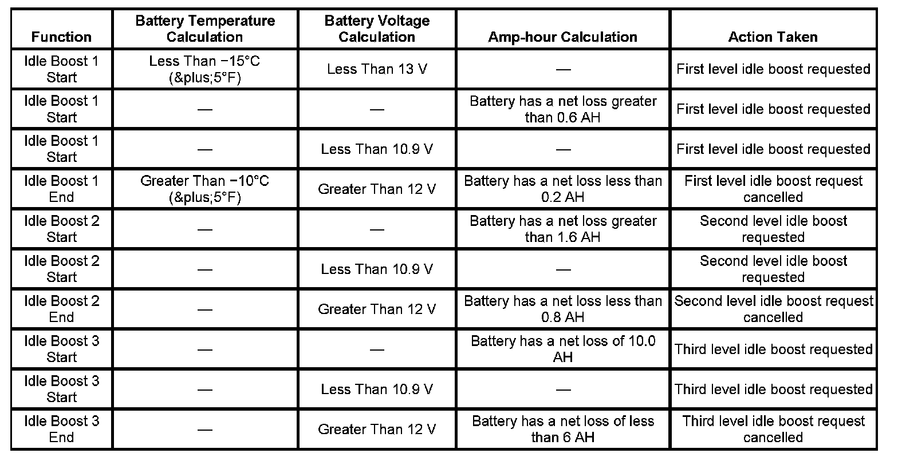

Electrical Power Management Description and Operation
ELECTRICAL POWER MANAGEMENT DESCRIPTION AND OPERATION
ELECTRICAL POWER MANAGEMENT
The electrical power management (EPM) is used to monitor and control the charging system and alert the driver of possible problems within the charging system. The EPM system makes the most efficient use of the generator output, improves the battery state of charge (SOC), extends battery life.
The idle boost operation is a means of improving generator performance during a low voltage or low battery SOC condition.

Idle boost is activated in incremental steps, idle boost 1 must be active before idle boost 2 can be active. The criteria used by the body control module (BCM) to regulate EPM are outlined.